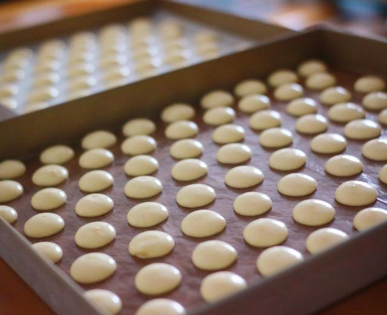

Egg Cookies

Description
This simple yet delicious recipe for egg cookies is a must-have for kids. It's a healthy treat that children will love. You can easily adjust the amount of sugar to suit your taste.
Ingredients
- 1 Egg
- 2 Egg yolks
- 50g Granulated sugar
- 80g Cake flour
Steps
- Pour the egg yolks, whole egg, and granulated sugar into a bowl. Then, use a whisk or an electric mixer on high speed to beat the mixture.
- Beat until noticeable streaks appear. Then, switch to the lowest speed to smooth out the bubbles. This step is crucial for achieving a smooth texture in the cookies.
- The batter should be smooth with well-incorporated bubbles, and it should be thick enough not to disappear quickly when dripped, yet still fluid.
- Sift the cake flour and add it to the mixture. Gently fold the batter using a folding technique, ensuring everything is well combined.
- After folding, the batter should be smooth, with no dry flour remaining, and have a certain thickness. It should not be too runny.
- Transfer the batter into a piping bag. Use a spatula to push the batter forward and expel any air.
- Line a baking tray with parchment paper or a silicone baking mat to prevent sticking and facilitate easy removal after baking. Don't skip this step, or you may regret it later. When piping the cookies, keep them small, about 1-2 centimeters in diameter, as they will expand during baking. Leave enough space between each cookie; otherwise, they may spread too much and become one large cookie. Smaller cookies are cuter.
- Bake at 150°C (302°F) on the middle rack for 30 minutes. Enjoy your cookies!